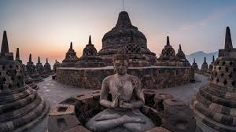

Candi Borobudur adalah candi Buddha Mahayana yang megah, dibangun pada masa kejayaan Dinasti Syailendra di Kerajaan Mataram Kuno. Pembangunannya diperkirakan dimulai pada abad ke-8 dan selesai sekitar tahun 824 Masehi, Candi ini berfungsi sebagai tempat pemujaan Buddha dan tempat ziarah, serta melambangkan tiga tingkatan alam semesta menurut filsafat Buddha. 
Candi Borobudur dibangun dengan tujuan untuk memuliakan ajaran Buddha Mahayana dan menjadi tempat ziarah bagi umat Buddha. Candi Borobudur melambangkan tiga tingkatan alam semesta dalam filsafat Buddha: Kamadhatu (alam rendah), Rupadhatu (alam perantara), dan Arupadhatu (alam tertinggi). Dinding candi dihiasi dengan lebih dari 2.600 relief yang menceritakan kisah hidup Buddha, ajaran-ajaran Buddha, dan kehidupan masyarakat pada masa itu.